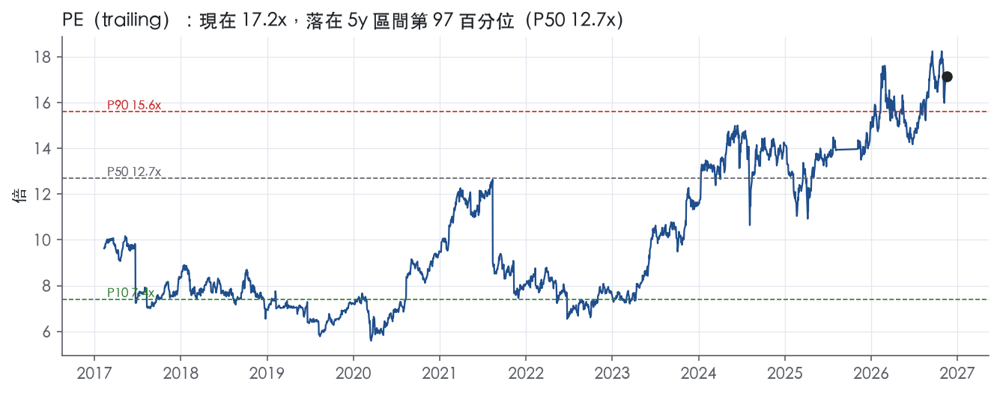
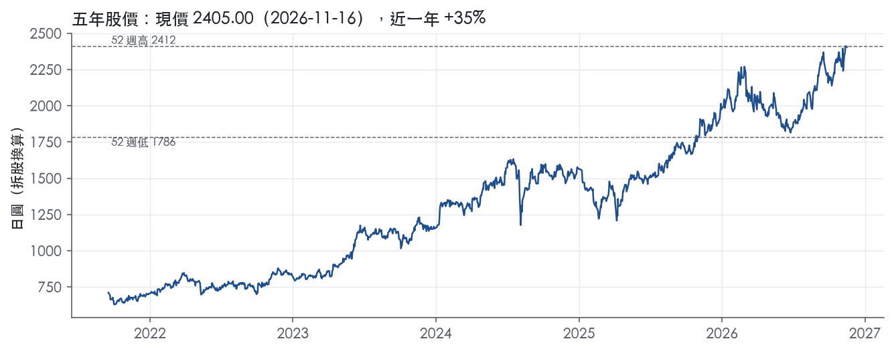

評等總表 › 未分類 › 8001.T
伊藤忠商事（8001.T）
倍數收斂到 17.5x，報酬低於門檻，中性｜評等 減碼｜目標價 2317
評等歷史與財報快評
| 報告日 | 評等 | 目標價 | 當時股價 | 超額報酬 |
|---|---|---|---|---|
| 2026-11-16 | 減碼 | 2,317 | 2,405 | -9.7% |
| 評等 | 減碼 |
| 12 個月目標價 | 2317 日圓 |
| 現價 | 2405.00 日圓（2026-11-16） |
| 預期報酬 | 股價 -3.6%＋股息 1.8%＝總報酬 -1.8%；日股門檻 7.8%，超額 -9.7% |
| 估值方法 | P/E 17.5x，套在第 5–8 季的EPS（也就是一年後的未來四季） |
| 三情境 | 熊 1842／基準 2355／牛 2835 |
| 研究流程 | 四位研究員兩輪辯論＋研究總監裁決 |
| 資料來源 | EDINET、TDnet、J-Quants、Yahoo、FRED（全免費） |
目錄
第一章 結論摘要
倍數收斂到 17.5x，報酬低於門檻，中性（研究總監裁決，四位研究員兩輪辯論後）
評等 減碼｜12 個月目標價 2317 日圓（總監三情境機率加權 2416 與研究員中位數 2218 各半）｜現價 2405.00（2026-11-16）
預期報酬：股價 -3.6%＋股息 1.8%＝總報酬 -1.8%。日股門檻 7.8%，超額 -9.7%。
估值方法：P/E 17.5x，套在第 5–8 季的EPS（也就是一年後的未來四季）。三情境：熊 1842（18%）／基準 2355（50%）／牛 2835（32%）。
立場中性而評等減碼：評等看的是「預期總報酬 -1.8% − 日股門檻 7.8%」＝超額 -9.7%，不是絕對漲跌；中性但超額偏離門檻，代表情境機率或股利把報酬推離門檻。
什麼會讓研究總監改變看法：FY2028 期初計畫淨利成長 ≥8% 且下半期持分法不低於 230.50B，或同業籃顯示商社同處 5 年 95% 分位以上，折價撤回、倍數回 18.8x；2027-03 期末 NET DER > 0.55 或 LTM 利息保障跌破 6x，倍數降到 16.5x、熊機率上調。
投資論點
- 持分法高峰難續：持分法收益靠金屬推到高峰，借款又增加 490.1B，市場不該續付 18.8x。
- 報酬低於門檻：市場一年後付 17.5x，含股息總報酬 -1.8%，低於門檻 7.8%。
- 同業重估是反方：若商社同業同處五年高檔，這是類股重估，倍數會回到 18.8x。
關鍵數字
| 過去四季（實際，FY2027Q2） | 未來四季 | 第 5–8 季 | 第 9–12 季 | |
|---|---|---|---|---|
| 營收（B） | 15,503.7B | 16,201.3B | 16,849.4B | 17,607.6B |
| 營收成長 | 5.6% | 4.5% | 4.0% | 4.5% |
| 營業利益率 | 4.9% | 5.2% | 5.0% | 5.0% |
| EPS（日圓） | 140.22 | 132.53 | 134.55 | 141.00 |
| EPS 成長 | 5.5% | -5.5% | 1.5% | 4.8% |
| 每股股息（日圓） | — | 0.00 | 0.00 | 0.00 |
| P/E（現價） | 17.2x | 18.1x | 17.9x | 17.1x |
| 股息殖利率（現價） | 1.8% | — | — | — |
過去四季為申報數字；預測為研究總監的假設、程式計算。倍數與殖利率都用現價計算，用來看現價對應各期獲利的高低。
三情境
| 情境 | 機率（歷史） | 故事 | 未來四季營收成長 | 第 5–8 季營益率 | 倍數 | 目標價 | 股價漲跌 |
|---|---|---|---|---|---|---|---|
| 熊 | 18%（18%） | 對應風險表第 1、2、4 條：美國下行（銅 11,800、Baa 2.30、GDP 0.3）＋日本基準，金屬持分法反轉與資源減損、借款增加下金利収支惡化、買回放緩，治理溢價部分回吐，倍數比基準低 2.0x | 1.0% | 4.6% | 15.5x | 1842 | -23.4% |
| 基準 | 50%（52%） | 油價 88、日圓 153、日銀 2.00：價格型分部增收逐步退場、情報金融與住生活支撐，營益率略高於 LTM，持分法固定在 LTM，市場一年後付 17.5x | 4.5% | 5.0% | 17.5x | 2355 | -2.1% |
| 牛 | 32%（30%） | 美國上行（銅 15,200、GDP 2.8）＋日本基準（日圓 153）：金屬與機械持分法動能延續、Q3 短信上修全年計畫、買回維持上半期步調，倍數比基準高 2.0x | 6.5% | 5.3% | 19.5x | 2835 | 17.9% |
目標價由程式依研究總監的驅動與倍數計算；機率由研究總監給定。括號內是歷史頻率：把這檔股票過去十年 12 個月報酬的波動形狀，置中在基準情境，結果落在各情境附近的比例。

四位研究員用不同方法各自估值，回應研究總監的質疑後交出第二輪，最後由總監逐點裁決。各研究員的主張見第七章，裁決理由見第八章，完整論證見《研究底稿》。
| 立場（一輪→二輪） | 加權目標價（一輪→二輪） | 評等（一輪→二輪） | 第二輪倍數 | 熊～牛目標價 | |
|---|---|---|---|---|---|
| R1 成長與敘事 | 看空→看空 | 2248→2231 | 減碼→減碼 | 16.5x | 1685～2632 |
| R2 資本報酬與價值 | 看空→看空 | 1862→1884 | 賣出→賣出 | 14.3x | 1415～2319 |
| R3 盈餘品質與下檔 | 看空→看空 | 2239→2206 | 減碼→減碼 | 17.2x | 1621～2538 |
| R4 市場隱含預期 | 中性→看空 | 2424→2350 | 減碼→減碼 | 17.0x | 1796～2853 |
| 研究總監裁決 | 中性 | 2317 | 減碼 | 17.5x | 1842～2835 |
目標價由程式依各自的驅動與倍數計算；評等＝機率加權總報酬 − 日股門檻。
第二章 業務概況
公司做什麼、賣給誰
伊藤忠商事是日本的綜合商社，透過貿易、融資、物流及專案企劃等機能，並以資源開發投資與事業投資為手段，持續培養並持有多元化的機能與know-how。公司以八個ディビジョンカンパニー為核心，在繊維、食料、住生活、情報・金融等生活消費分野、機械・化学品・石油製品・鉄鋼製品等基礎產業分野，以及金属資源、エネルギー資源等資源分野展開多角化事業活動。客戶端從一般消費者（透過全家便利商店等零售終端）到企業客戶（原物料、能源、工業設備採購方）皆有覆蓋，是典型的B2B＋B2C混合型商社。這家公司的獲利結構高度依賴旗下龐大關係企業群與權益法投資收益，而非單純貿易價差，FY2027上半年持分法投資損益達230.5B日圓，年增70.3B日圓即為佐證（is.pretax 相關科目，8-K 揭露）。
業務分部與產品
公司以八大事業セグメント營運，各分部規模與營收占比10-K未揭露數字，僅能從質化描述與半年度獲利貢獻排序推斷方向。繊維分部涵蓋從纤維原料、糸、織物到衣料品、服飾雜貨的全球生活消費事業，主要關係會社包括㈱デサント、㈱ドーム、㈱エドウイン等。機械分部涉及機械プラント、橋梁、鉄道等基礎設施、發電售電、水環境廢棄物處理及船舶航空機汽車等單體機械，代表公司為㈱ヤナセ、日本エアロスペース㈱。金属分部做金屬礦物資源開發、鐵鋼製品加工及溫室氣體排放權交易，代表公司伊藤忠メタルズ㈱、CSN Mineração S.A.。エネルギー・化学品分部跨原油、LNG、氫氨、半導體電子材料到蓄電池與再生能源售電，代表公司伊藤忠エネクス㈱（持股55.8%）。食料分部從原料到零售全面覆蓋，代表公司Dole International Holdings（100%持股）、㈱日本アクセス、プリマハム㈱（持股50.9%）。住生活分部做紙漿、天然橡膠、住宅建材、物流與不動產開發，代表公司伊藤忠都市開発㈱、ＤＡＩＫＥＮ㈱。情報・金融分部做IT解決方案、BPO、醫療健康及金融保險，代表公司伊藤忠テクノソリューションズ㈱、ほけんの窓口グループ㈱、ポケットカード㈱（持股80%）。第8セグメント與前七家カンパニー協作、聚焦市場導向新業務創造，核心資產是全家便利商店（持股94.7%的表決權）。從FY2027上半年損益變動看，情報・金融、金屬、エネルギー・化学品與住生活對毛利增長貢獻最大，是當期獲利引擎。
客戶、地區與通路
公司的客戶與通路呈高度全球化與多通路並存。海外現地法人遍佈美國（伊藤忠インターナショナル会社）、歐洲（伊藤忠欧州会社）、中國（伊藤忠（中国）集団有限公司）、香港、新加坡等地，於主要海外據點從事與母公司相似的多元商品貿易與投資活動。零售通路以全家便利商店為核心終端，另有不動產開發（伊藤忠都市開発㈱）、金融保險代理（ほけんの窓口グループ㈱）等直接面對消費者的業務線。B2B客戶則涵蓋鋼鐵、石化、食品加工、汽車等產業鏈上下游採購與銷售對象，具體客戶集中度10-K未揭露。公司亦透過政策保有股（交叉持股）維繫與日清食品、セブン＆アイ・ホールディングス、昭和産業等交易夥伴的長期供銷關係，FY2026年度末非上市股票帳列金額141.0B日圓、上市特定投資股票166.3B日圓。
最近四季發生了什麼
近四季營收與獲利呈現「量增、利潤率逐步改善」的軌跡。FY2026Q3（2025年12月底）營收3,737.09B日圓，年減0.3%，營益率4.6%，淨利205.02B日圓，EPS 29.27日圓。FY2026Q4（2026年3月底）營收回升至3,836.84B日圓，年增4.1%，營益率持平於4.6%，淨利194.99B日圓，EPS 27.89日圓。FY2027Q1（2026年6月底）營收3,875.86B日圓，年增8.9%，營益率躍升至5.3%為近八季高點，淨利293.76B日圓，EPS 42.02日圓。FY2027Q2（2026年9月底）營收4,053.89B日圓，年增9.9%，營益率5.1%，淨利286.71B日圓，EPS 41.04日圓。公司FY2027上半年（4-9月合計）收益合計7,929.75B日圓，較去年同期增加680.59B日圓，主因エネルギー・化学品、金屬、情報・金融、住生活增收。毛利1,316.65B日圓，增加107.05B日圓，主因情報・金融、金屬、エネルギー・化学品、住生活、機械獲利改善。歸屬母公司中間純利益580.47B日圓，較去年同期增加80.19B日圓。有利子負債增加490.1B日圓至4,162.8B日圓，NET DER由0.46倍升至0.52倍，主因庫藏股買回、配息支付及日立建機、伊藤忠食品追加收購。公司最新全年計畫（業績予想）為歸屬母公司淨利950.00B日圓、每股盈餘136.75日圓，上半年580.47B日圓僅達成全年計畫的約61%，隱含公司對下半年成長趨緩抱持保守假設，符合日股公司期中計畫慣例偏低但終值常被超越的模式。
公司自己說的成長引擎與策略
公司將原有的中期經營計劃改為長期羅針盤式方針「The Brand-new Deal～利は川下にあり～」，以「投資なくして成長なし」、「企業ブランド價值的向上」、「股東回報擴大」三大支柱追求企業價值持續提升。公司強調全員要秉持「利は川下にあり」思維磨練行銷能力，並運用創業根基的川下領域所培養的資產與know-how，加速擴展至川上、川中領域以擴大事業版圖。具體做法包括強化ディビジョンカンパニー間橫向協作以極大化協同效應、透過事業組合創造業務變革，並在股東回報方面於2026年5月明確化「累進配當」方針。企業品牌價值則透過人力資本強化、利害關係人溝通強化及SDGs貢獻等主要措施持續提升。公司對投資株式（政策保有股）設有每年經濟合理性與戰略意義雙重檢驗機制，連續兩期無法產生經濟附加價值者原則出售，呼應東證對資本效率與交叉持股處分的要求。
就我方判斷，目前估值P/E 17.2x位於五年分位97.3%、EV/Sales 1.3x位於99.7%分位，顯示市場已大幅上修評價倍數，相對自身歷史區間明顯偏貴，上行空間需要更強的獲利能見度支撐。公司成長引擎實質上仍是權益法投資收益與金屬、能源化學品、情報金融分部的週期性獲利，槓桿同步上升（NET DER 0.52倍）意味著財務彈性正在收斂，若下半年商品價格或匯率不如預期，達成950.00B日圓全年計畫的確定性會下降。累進配當與庫藏股買回是短期股東回報的主要催化，但在估值已處於歷史高分位的情況下，後續評等上修空間有限，重點應放在獲利品質（非權益法科目的本業現金流）能否持續改善。

第三章 經濟護城河
結論：窄，趨勢穩定
伊藤忠評為窄護城河：我們有把握集團資本報酬在未來 5 年以上仍高於資本成本，但沒有把握撐過 10 年。優勢來自三處：川下消費通路與品牌資產、橫跨原料到零售的價值鏈規模，以及靠交叉持股維繫的長期供銷關係；技術與網路效應不在其中。趨勢判為穩定、不判變窄，理由有二：帳面 ROIC 最新 6.0% 雖然落在十年最低，但 ROE 最新 14.6%、FCF 利潤率最新 5.7% 都沒有同步跌破區間。
優勢來源
無形資產（品牌、特許經營）：無形資產是最紮實的一項，證據集中在消費端。公司在繊維分部持有デサント、エドウイン、ドーム等品牌事業，並推動品牌事業的海外展開。公司持有ファミリーマート 94.7% 議決權，這是以加盟體系經營的便利商店事業。食料分部擁有 Dole International Holdings，全資持有，負責 Dole 亞洲青果與全球加工食品事業。便利商店門市網與消費品牌，是新進者短期內複製不了的資產。
成本優勢（價值鏈規模）：價值鏈規模帶來的成本優勢存在，但幅度有限。食料分部的業務範圍從原料一路涵蓋到零售，在國內外進行有效率的生產、流通與銷售。這條鏈上同時有伊藤忠飼料、伊藤忠食糧、日本アクセス等子公司。經營方針要求運用「從祖業的川下分野到川上、川中，在廣泛領域累積的資產與 know-how」來擴大事業領域。上下游一手包辦，可以降低採購與物流成本，也能取得終端需求資訊；但三菱、三井等同業也有類似布局，這項優勢只能算相對優勢，不是獨占。
轉換成本（長期供銷關係）：轉換成本屬中等，主要靠交叉持股與雙向交易綁住客戶。公司向日清食品集團供應原料，同時銷售該集團的加工食品，並以持股維持這段關係。昭和産業、ニップン也是同樣模式：公司供應飼料原料、麥、菜種，再銷售對方的小麥粉產品。買賣兩頭同時綁定，客戶要換掉伊藤忠，代價不只是換一個供應商。
數字上看得到嗎
數字只支持一半：利潤率穩定性看得到，ROIC 對資本成本的超額報酬幾乎看不到。
ROIC 十年平均 10.4%，資本成本代理值 10.1%，兩者只差 0.3%。有資料的 8 年中，只有 5 年高於資本成本，最新的 6.0% 還是十年最低。單看這組數字，連窄護城河都撐不住，這是本章主張與數字最直接的衝突。
我們仍維持窄，理由有三。
第一，代理值的口徑偏高。代理值是 10 年債加 5%，對應的是美國 10 年債 5.1，而日本 10 年債只有 2.841。伊藤忠以日圓融資，真實資本成本應低於這個代理值，超額報酬因此被低估。
第二，ROIC 口徑漏掉了投資收益。這家公司的獲利大量來自權益法投資，ROIC 很可能沒把這部分收益完整納入。ROE 十年平均 16.5%、標準差 2.4%、最低 12.7%，沒有出現 ROIC 那樣的斷崖。
第三，利潤率夠穩定。毛利率十年標準差 2.2%、最新 16.7%、平均 16.5%；FCF 利潤率標準差 1.0%。這符合「有定價能力的通路商」該有的樣子。
不給寬，原因同樣清楚。營業利益率最新 4.7%，低於十年平均 7.5%。營收成長標準差高達 34.1%，最高一年 110.5%，顯示歷史數列有會計口徑斷層，十年平均的可比性有限。
什麼會侵蝕它
最大的威脅是交叉持股鬆動，這會直接削弱轉換成本。公司方針是：連續兩期未創造經濟附加價值，或投資目的實現可能性低的持股，原則上出售。東證推動處分政策保有股，用持股綁住交易的模式會逐步失效。
第二是獲利結構往週期性分部偏移。FY2027 上半年收益增加，主因是エネルギー・化学品、金属、情報・金融、住生活增收。金屬與能源的獲利由商品價格決定，不是由護城河決定。
第三是投資紀律。有利子負債增加 490.1B 日圓至 4,162.8B 日圓，主因包括日立建機、伊藤忠食品的追加收購。公司奉行「沒有投資就沒有成長」，收購出價過高會直接拉低 ROIC。
第四，公司沒有技術護城河可以補位。有報的研究開發活動一欄寫的是「無特別應記載事項」。
對估值的含意
目標倍數相對其他綜合商社應給持平，不該溢價：護城河只有窄，ROIC 超額報酬在現行代理值下只有 0.3%。目前 P/E 17.2x 已在五年分位 97.3%，已經反映超過窄護城河應有的評價。估值模型的超額報酬期建議設定 5 至 10 年，不要外推到 10 年以上。
量化底稿：報酬率與利潤率的水準與穩定度
| 指標 | 最新 | 十年平均 | 標準差 | 最低 | 最高 |
|---|---|---|---|---|---|
| ROIC | 6.0% | 10.4% | 2.9% | 6.0% | 14.5% |
| 毛利率 | 16.7% | 16.5% | 2.2% | 13.5% | 22.0% |
| 營業利益率 | 4.7% | 7.5% | 2.1% | 4.6% | 10.5% |
| FCF 利潤率 | 5.7% | 5.4% | 1.0% | 3.1% | 7.1% |
| ROE | 14.6% | 16.5% | 2.4% | 12.7% | 21.8% |
程式計算。資本成本代理值（10 年債＋5%）：10.1%；ROIC 平均減資本成本：0.3%；ROIC 有資料的 8 年中，高於資本成本 5 年。
第四章 財務體質與盈餘品質
結論：中品質，現金轉換近三年尚可但 LTM 明顯轉弱，FCF 落後淨利主因資本支出與股權追加收購而非盈餘造假
現金有沒有跟上盈餘
LTM 營業現金流／淨利為 0.83x，低於 1.00x 的綠燈門檻，但近三年平均 1.20x、十年平均 1.28x 都在 1 倍以上，顯示長期現金轉換是健康的，問題集中在最近一期。半年報顯示，本中間期（2026年4月至9月）營業活動現金流僅 293.2B 日圓，較去年同期 609.2B 日圓大幅下滑，公司解釋主因為食料、情報・金融及能源化學品業務的運轉資金增加抵銷了營業收入的成長。相對地，上一個完整會計年度（FY2026）營業活動現金流為 1,131.8B 日圓，較前期 997.3B 日圓成長，優於淨利的增幅，屬於正常的季節性波動而非結構性惡化。自由現金流（扣投資活動現金流）方面，FY2026 全年為 743.0B 日圓，較前期 481.0B 日圓亦成長；但本中間期自由現金流為負 141.1B 日圓（去年同期為負 528.3B 日圓，基期更差），轉負主因投資活動現金流出擴大至 152.1B 日圓，包含機械、住生活及情報・金融的持分法投資取得與日立建機、伊藤忠食品的追加收購。這些是主動的策略性資本配置，不是盈餘品質惡化的訊號。應計比率 LTM 為 1.0%、近三年平均 -1.2%、十年平均 -1.3%，都遠低於 5.0% 的紅燈門檻，顯示淨利沒有靠應計項目膨脹。
公司調整了什麼（GAAP 與非 GAAP 的差距）
伊藤忠不採用美式非 GAAP 調整架構，但損益表上有多個一次性／非經常性項目需拆解。有価証券損益（Securities gain/loss）FY2026 為 175.2B 日圓，較前期 83.2B 日圓大增，主因 C.P. Pokphand Co. Ltd. 出售利得與紙漿事業重組利得，部分被前期デサント子會社化重評價利益的反動抵銷；這屬於一次性投資利得，估值不應視為經常性盈餘來源。本中間期有価証券損益則降至 44.3B 日圓（去年同期 136.0B 日圓），因去年同期 C.P. Pokphand 與 PROVENCE HUILES 出售利得的基期效應消失，部分被 CIECO Azer 等事業出售抵銷。持分法投資損益 FY2026 為 323.5B 日圓（前期 349.3B 日圓），本中間期則成長至 230.5B 日圓（去年同期 160.2B 日圓），主因金屬、機械部門持分法公司貢獻增加，屬於正常營運範疇而非調整項。本中間期法人所得稅費用較去年同期減少 38.4B 日圓，公司解釋為東京センチュリー社債型種類株式引受與日立建機追加取得相關的稅金費用改善，這是稀釋/併購會計的稅務技術性影響，建議估值時對淨利的稅率效應保持謹慎。公司未單獨揭露 SBC 金額，資料包量化底稿對此項無資料，因此無法評估其對盈餘的侵蝕程度。
資產負債表與資本配置
槓桿正在上升但仍在可控區間，NET DER 從 FY2026 期末 0.46 倍升至本中間期末 0.52 倍，淨有息負債由 3,024.3B 日圓增至 3,535.2B 日圓，公司解釋主因自有股份回購與配息支付、以及日立建機與伊藤忠食品的追加取得。股東資本比率仍維持 39.5%，較 FY2026 期末 39.4% 微升，顯示槓桿上升主要是資產規模擴張而非股東權益被侵蝕。流動性準備方面，FY2026 期末現金及約當現金加定期存款 648.4B 日圓，加上承諾額度未使用部分，流動性準備合計 1,581.3B 日圓，對比短期有息負債及偶發負債合計 1,292.7B 日圓，覆蓋充足。長期信用評等為 JCR AA+、R&I AA、Moody's A2、S&P A，皆為穩定展望，支撐其持續舉債進行併購（日立建機出資比例提升至 33.4%、伊藤忠食品公開收購達 100%）的能力。股東回饋方面，（股利＋回購）／淨利 LTM 30.1%、近三年平均 29.6%，低於 50% 綠燈門檻但屬黃燈，顯示公司把現金分配在成長性併購與回饋股東之間取得平衡，而非激進舉債回饋股東。
紅旗逐條說明
程式標出的唯一紅旗是「自由現金流／淨利」：LTM 0.54x、近三年平均 0.93x。這是可解釋的一次性／策略性因素，非會計品質問題。拆解後可見：(1) 淨利端持分法投資損益與有価証券損益對 LTM 淨利貢獻較大，但這些是帳上利得不產生對應現金流，壓低了 CFO/淨利與 FCF/淨利的比值；(2) 投資活動現金流出因日立建機追加出資至 33.4%、伊藤忠食品私有化及セブン銀行 20% 股權取得而擴大，FY2026 投資活動現金流出 388.9B 日圓，本中間期再擴大至 152.1B 日圓，這些都是主動的資本配置，不是資本支出失控或盈餘灌水；(3) 近三年平均 0.93x 已接近綠燈的 0.90x 門檻，顯示這不是結構性長期問題，而是本期併購活動密集所致。其餘燈號多為黃燈而非紅燈，依規則可不逐條回應，但簡要說明：營業現金流／淨利黃燈同上述現金轉換波動解釋一致；利息保障倍數 LTM 6.69x 黃燈，低於近三年 8.36x 與十年 15.5x，反映 NET DER 上升與日圓利率上揚推升利息支出，公司在半年報中明確點名「円金利上昇及び借入金の増加に伴う金利収支の悪化」，屬可解釋的利率環境變化而非償債能力惡化；（股利＋回購）／淨利黃燈反映公司將資本優先用於併購擴張，非警訊。
對估值的含意
估值應以 GAAP 淨利為基礎，但對 LTM 的持分法投資損益與有価証券損益（一次性投資利得合計規模顯著）部分予以折價，因為這些項目不會每年重複出現。FCF/NI 紅燈不需要對永續性現金流假設打折，因為其成因是本期密集併購的投資活動現金流出，而非核心業務現金轉換惡化——長期（十年平均 1.01x）與近三年（0.93x）數據都支持這個判讀。槓桿從 0.46 倍升至 0.52 倍 NET DER，仍遠低於信評機構對 AA/A 級評等的容忍區間，不構成限制估值倍數的理由，但若日圓利率持續上行、併購步調不放緩，下一步應留意利息保障倍數是否跌破 3 倍紅燈。
量化底稿：盈餘品質計分表
| 項目 | LTM | 近三年 | 十年 | 燈號 | 規則 |
|---|---|---|---|---|---|
| 營業現金流／淨利 | 0.83x | 1.20x | 1.28x | 黃 | ≥1.00x 綠、<0.80x 紅 |
| 自由現金流／淨利 | 0.54x | 0.93x | 1.01x | 紅 | ≥0.90x 綠、<0.60x 紅 |
| 應計比率（(淨利−CFO)／平均總資產） | 1.0% | -1.2% | -1.3% | 黃 | ≤0.0% 綠、>5.0% 紅 |
| SBC／營收 | — | — | — | — | ≤3.0% 綠、>8.0% 紅 |
| 淨負債／EBITDA | — | — | — | — | ≤1.50x 綠、>3.00x 紅 |
| 利息保障倍數（營業利益／利息） | 6.69x | 8.36x | 15.5x | 黃 | ≥8.00x 綠、<3.00x 紅 |
| 稀釋股數年變動 | -0.0% | -1.4% | -1.2% | 綠 | ≤0.0% 綠、>3.0% 紅 |
| （股利＋回購）／淨利 | 30.1% | 29.6% | 26.0% | 黃 | ≥50.0% 綠、<0.0% 紅 |
程式計算；燈號以 LTM（無則近三年平均）判定。
- 程式紅旗：自由現金流／淨利 紅燈（LTM 0.54x，近三年平均 0.93x）
第五章 主要風險
結論：最大的風險是槓桿與投資回報的雙重轉弱——NET DER於FY2027H1已升至0.52倍，一旦商品價格或持分法投資收益反轉，EPS與目前已處於歷史高分位的估值倍數會同步承壓。
五大風險表
| 風險 | 觸發指標（看什麼數字、在哪裡看） | 對EPS的影響方向與粗略幅度 | 未來12個月發生機率（高／中／低） | 出處 |
|---|---|---|---|---|
| 持分法投資收益反轉（金屬、能源化學品、機械等關係會社獲利週期性） | 每半年決算短信「持分法による投資損益」科目；FY2027H1為230.5B日圓，年增70.3B日圓 | 負向・大：此科目已佔稀釈前利益相當比重，波動直接灌入EPS | 中 | |
| 商品價格與資源資產減損（金屬資源、能源開發、石炭・鐵礦石・原油價格） | 有報「固定資産に関する減損リスク」章節＋每季財報「固定資産に係る損益」科目（FY2027H1為0.3M日圓，去年同期為-0.2M日圓） | 負向・中大：若資源價格低迷觸發新減損，直接衝擊營益與淨利 | 中 | |
| 匯率風險（円安／円高影響海外投資換算與進出口毛利） | USDJPY（158.23）；決算短信「為替損益」「為替換算調整額」（FY2027H1為-75.5M日圓，去年同期為+27.7M日圓） | 方向不定・中：円大幅波動會透過外幣貿易與海外投資的股東資本換算雙重影響，FY2027H1為換算調整額轉為負值 | 中 | ／ |
| 融資成本上升與槓桿擴大（有利子負債增加、日圓利率上升） | 決算短信NET DER（FY2027H1為0.52倍，較FY2026年末0.46倍上升0.06）；有利子負債（FY2027H1為4,162.8B日圓，較FY2026年末增加490.1B日圓）；日本國債10年期利率（2.841） | 負向・中：金利收支因円金利上升及借入金增加而惡化（FY2027H1「金利収支」為-31.9B日圓，去年同期-28.6B日圓，差額-3.3B日圓） | 中 | |
| 信用風險（取引先信用狀況惡化、營業債權回收不能） | 決算短信「貸倒損失」科目（FY2027H1為-5.0M日圓，去年同期-7.7M日圓）；資產負債表「營業債權」（FY2027H1為3,131.7B日圓，較FY2026年末增加98.7M日圓） | 負向・小中：目前貸倒損失改善，但營業債權規模持續擴大，一旦取引先集中違約會放大信用成本 | 低 | ／ |
逐條說明
持分法投資收益的反轉是目前最需要監測的單一科目，因為FY2027H1持分法由投資損益達230.5B日圓，較去年同期增加70.3B日圓，增量主因金屬、機械、其他及修正消去、能源化學品、住生活、食料等分部獲利改善。這個科目本質上是公司對旗下眾多關係會社（非合併子公司）獲利的被動反映，不是伊藤忠自身貿易價差賺來的現金流，週期性強，一旦金屬或能源價格轉向，科目會同步收縮，而EPS對此的敏感度在過去幾個季度持續放大。監測方法是每半年看這個科目的絕對金額與年增減方向，以及公司自己揭露的「主な増減理由」中點名哪些分部貢獻或拖累。
固定資產減損風險是公司在有報風險因子章節中明確點名的結構性風險，涵蓋不動產、資源開發資產、航空機・船舶、商標權及無形資產，公司承認「現時点において必要な減損等の処理は実施しておりますが…石炭・鉄鉱石・原油価格等の資源価格の変動による市況低迷…場合において、新たに減損処理を実施することになり」。這條風險不可視為單純免責條款，因為公司的金屬資源與能源分部確實持有大量開發型資產，監測指標是每季財報的「固定資産に係る損益」科目與有報年度揭露的個別資產減損明細。
匯率風險對伊藤忠是雙重作用：第一層是進出口貿易的外幣計價交易，第二層是海外投資經由「為替換算調整額」衝擊股東資本與期間損益的円貨換算金額。FY2027H1的為替換算調整額已由去年同期的+27.7M日圓轉為-75.5M日圓，顯示円的走勢已開始侵蝕其他綜合利益。公司用遠期外匯合約等衍生工具避險，但自承「完全に回避できるものではありません」，監測指標是USDJPY即期匯率搭配每季「為替損益」「為替換算調整額」兩個科目的方向與金額。
融資成本與槓桿風險是近兩季最明確惡化的指標：NET DER由FY2026年末的0.46倍上升到FY2027H1的0.52倍，有利子負債增加490.1B日圓，公司自己點名主因是自己股份買回、配息支付及日立建機、伊藤忠食品的追加收購。同時金利収支因円金利上升及借入金增加而惡化，從去年同期的-28.6B日圓擴大到-31.9B日圓，差額-3.3B日圓。這條風險會透過兩個管道壓縮EPS：直接的利息費用增加，以及槓桿上升後財務彈性收斂，限制公司在商品週期下行時的緩衝能力。監測指標是NET DER、有利子負債總額、金利収支三個數字的季度變化。
信用風險目前數字上看是改善的——FY2027H1貸倒損失為-5.0M日圓，優於去年同期的-7.7M日圓，公司解釋為「一般債権に対する貸倒引当金の減少」——但營業債權總額同時擴大到3,131.7B日圓，較FY2026年末增加98.7M日圓。公司在有報中坦承信用供與規模龐大，「取引先の信用状況の悪化や経営破綻等により、これらの債権等が回収不能となる」是結構性風險，在總經環境轉弱（特別是公司自己點名的中東情勢與保護主義貿易政策）下，這條風險的發生機率會從低轉中。
公司沒寫、但我們認為該注意的
一、估值已處於歷史高分位，任何負面消息的乘數效應會放大：目前P/E 17.2x位於五年分位97.3%、EV/Sales 1.3x位於99.7%分位、P/FCF 31.9x位於99.8%分位，遠高於自身歷史中值，意味著市場已為公司的成長與ROE改善給了高溢價，若持分法投資收益或獲利品質不如預期，股價下修的倍數壓縮風險比EPS下修本身更大。
二、累進配當與庫藏股買回政策與槓桿上升同時發生，可能壓縮未來加碼投資或抵禦下行週期的財務彈性：公司明確化「累進配當」方針並持續買回庫藏股，FY2027H1財務活動現金流為淨流出1,756億（即-175.6B日圓），主因為庫藏股買回、配息支付、日立建機及伊藤忠食品追加收購，這與NET DER同期上升0.06倍同時發生，若下半年商品週期或匯率轉為不利，股東回報政策的「不可逆性」（累進配當通常不輕易下修）可能迫使公司在資產配置上做出更保守的選擇，進而限制成長性投資。
第六章 市場在定價什麼
現價 2405.00 對應 trailing（過去四季）P/E 17.2x、EV/EBITDA —、EV/EBITA 26.6x、EV/Sales 1.3x、FCF 殖利率 3.2%。主要估值倍數 P/E 現在 17.2x，落在5 年區間第 97 百分位（P10／P50／P90 = 7.4x／12.7x／15.6x）。

把程式的機械基準預測放到現價下，市場付的前瞻倍數是：P/E（未來四季） 18.8x、P/E（第 5–8 季） 17.9x。反推 DCF 顯示市價隱含未來五年營收年成長 27.6%（WACC 9.0%、終值成長 3.0%、FCF 利潤率 2.0%，SBC 不加回）。
| 倍數 | 現在 | 5 年 P10 | 5 年 P50 | 5 年 P90 | 現在分位 | 全期 P50 |
|---|---|---|---|---|---|---|
| P/E | 17.2x | 7.4x | 12.7x | 15.6x | 97.3% | 8.6x |
| EV/EBITA | 26.8x | — | — | — | — | 8.7x |
| EV/EBIT | 26.8x | 7.4x | 10.7x | 25.0x | 98.5% | 9.4x |
| EV/Sales | 1.3x | 0.6x | 0.9x | 1.2x | 99.7% | 0.7x |
| P/S | 1.1x | 0.5x | 0.7x | 1.0x | 99.3% | 0.5x |
| P/FCF | 31.9x | 8.1x | 13.2x | 18.3x | 99.8% | 10.5x |
trailing 倍數（股價 ÷ 過去四季）；分位以每個交易日計算。
（日股同業籃尚未建置：評等門檻用日股絕對門檻＝日本 10 年公債＋股權風險溢酬 5%，見首頁。）
事後實現前瞻倍數帶（P/E，2018-11-21..2025-11-19）：P10／P50／P90 = 6.0x／7.2x／11.7x。它是每個交易日的股價除以之後四季實際實現的指標；一年後，今天的第 5–8 季正是那時的未來四季，所以這條帶是 12 個月目標價的同口徑倍數。因為用的是事後實際而非當時預期，過去成長超乎預期的公司這條帶會偏低。
程式的機械基準（成長率從過去四季年增率三年收斂到 6%、利潤率持平）用 事後實現前瞻 P/E P50 估值得到 965（-59.9%），市場現行前瞻倍數（現價 ÷ 基準 未來四季指標）一年後持平，套在基準 第 5–8 季指標得到 2531。這兩個數字只是參考點，不是本報告的目標價；研究員對這個定價的回應在第七章。
第七章 四位研究員的看法
下表是每位研究員第一輪（各自獨立）與第二輪（回應研究總監的質疑後）的結果。目標價全由程式依各自的假設計算。
| 立場（一輪→二輪） | 加權目標價（一輪→二輪） | 評等（一輪→二輪） | 第二輪倍數 | 熊～牛目標價 | |
|---|---|---|---|---|---|
| R1 成長與敘事 | 看空→看空 | 2248→2231 | 減碼→減碼 | 16.5x | 1685～2632 |
| R2 資本報酬與價值 | 看空→看空 | 1862→1884 | 賣出→賣出 | 14.3x | 1415～2319 |
| R3 盈餘品質與下檔 | 看空→看空 | 2239→2206 | 減碼→減碼 | 17.2x | 1621～2538 |
| R4 市場隱含預期 | 中性→看空 | 2424→2350 | 減碼→減碼 | 17.0x | 1796～2853 |
| 研究總監裁決 | 中性 | 2317 | 減碼 | 17.5x | 1842～2835 |
目標價由程式依各自的驅動與倍數計算；評等＝機率加權總報酬 − 日股門檻。
分歧度：第一輪 加權目標價 1862～2424（區間＝現價的 23%）· 倍數 14～17.5x · 立場 看空×3、中性×1；第二輪 加權目標價 1884～2350（區間＝現價的 19%）· 倍數 14.3～17.2x · 立場 看空×4（方向一致）。

| 研究員 | 第二輪主張 | 堅持的理由 |
|---|---|---|
| R1 成長與敘事 | 偏空，16.5x，落在過去一年市場付的中位與上緣之間。 | 自由現金流對淨利降到 0.54x，利息保障降到 6.69x，熊機率仍高於歷史。 |
| R2 資本報酬與價值 | 偏空，14.3x，取過去一年市場付的下緣。 | 淨負債比率由 0.46 升到 0.52，公司靠舉債回饋股東，治理溢價會部分消退。 |
| R3 盈餘品質與下檔 | 偏空，17.2x，以現行 P/E 一年後持平為準。 | 證券處分利得金額不經常，核心盈餘撐不起現價。 |
| R4 市場隱含預期 | 偏空，17.0x，市場持平 18.8x 減三項公司特有折價。 | 市場把週期性的持分法收益與資源順風當成結構性成長。 |
每位研究員的逐條回應與完整論證見《研究底稿》（8001.T_研究底稿_2026-11-16.docx）。
第八章 研究總監裁決
分歧登記
| 分歧點 | R1 | R2 | R3 | R4 | 什麼資料會分出勝負 |
|---|---|---|---|---|---|
| 目標倍數與錨 | 16.5x eps@ntm，1y 帶 P50–P90 之間 | 14.3x eps@ntm，1y P10，治理溢價部分消退 | 17.2x eps@ntm，trailing 持平、上下力量相抵 | 17.0x eps@q5_q8，市場持平 18.8x 減三項折價 1.8x | 2027-05-15 FY2027 短信的 FY2028 計畫與買回額度；2027-11-16 trailing P/E 落點 |
| 營收成長 y1／y2／y3 | 4.5／4.0／4.5%，有分部歸因 | 3.0／4.0／4.5% | 3.0／3.5／4.0% | 4.0／3.0／3.5% | 2027-02 Q3 短信收益對前年同期 3,737.09B的年增 |
| 營益率 y1／y2 | 5.2／5.0% | 5.1／5.0% | 4.9% 持平 | 5.3／5.1% | 2027-05 FY2027Q4 營益率對前年 4.6% |
| 槓桿與利率能否壓倍數 | 利息保障 6.69x、FCF／淨利 0.54x 列為低於持平的理由 | NET DER 0.52＝舉債回饋，觸發為買回受限 | 只與經常性處分利得相抵 | 量化 0.9x「槓桿與日圓利率敏感度」 | 2027-03 期末 NET DER、FY2028 買回方針；LTM 利息保障倍數 |
| 情境機率 | 28／56／16（史 30／54／16） | 24／58／18（史 26／58／15） | 29／59／12（史 33／53／14） | 25／58／17（史 27／55／18） | 程式對照表；下半期持分法對上半期 230.50B 的增減 |
逐點裁決
倍數：own，18.0x eps@q5_q8。 四人的錨都有口徑問題。R1、R2、R3 把 trailing 帶套在模型的 NTM 核心 EPS 上，但 trailing 17.2x 的分母是申報 EPS 140.22，含上半期一次性稅費改善（法人所得税 104.77B 對前年 143.13B）與有価証券損益（上半期 44.27B，FY2026 175.2B）；模型核心 EPS 排除這些並用 21.8% 稅率，同一價格對它的前瞻倍數是 18.8x。把 reported 口徑的帶放到核心 EPS 上，等於在口徑落差之外又疊一層降評，所以 R2、R1 自認「在帶內」的 14.3x、16.5x 比市場持平低 17%、4%（程式檢查表）。唯一同口徑的錨是市場持平 18.8x，劇本主尺也是 q5_q8，我採 R4 的架構；事後實現前瞻帶 P90 11.7x 因 EPS 由 53.97 跳到 110.57只作方向檢查。R4 的三項折價只留一部分：0.3x「一次性稅務」是重複計算，基準 EPS 已用 21.8%；0.6x「順風退場」已進他自己的營收驅動；0.9x「槓桿與日圓利率敏感度」有一半是日銀路徑，依原則 7 屬門檻範圍。留下的公司特有理由兩條：模型把 333.6B 營業外固定在 LTM，而這個 LTM 含上半期持分法年增 70.26B、增量以金属為首，銅價在本行前提的第 100 百分位且風險偏下；模型把利息費用固定在 LTM，而有利子負債增加 490.1B、上半期支払利息 59.41B 對前年 51.33B。反向的是模型漏掉經常性的受取配当金（上半期 31.52B），故折價只取 0.8x。R2 的「治理溢價消退」沒有觸發證據：信評 AA+／AA／A2／A 展望穩定、流動性準備 1,581.3B 對短期負債 1,292.7B、上半期自己株式取得 174.67B，看不到買回受限。
營收：y1 own 5.0%，y2／y3 採 R1 4.0／4.5%。 四位研究員與機械基準在營收上全部系統性偏低（誤差中位數 −0.6% 到 −0.8%，本研究部紀錄），依規則往反方向修正。Q2 收益 4,053.89B是八季最高；上半期增收 680.59B 以エネルギー・化学品、金属為首，短信把原油高騰歸因於本中間期的中東情勢，表示 2026-10 到 2027-03 的比較基期仍在油價上漲之前，價格效應不會在 NTM 就全部退場。R1 的分部歸因是四人中唯一的，y2／y3 採他的數字：油價 88、日圓 153（本行前提）落在 2027-04 以後的比較基期。R3、R4 把 y2 壓到 3.5% 以下，等於假設情報・金融與住生活的量增同步停止，證據缺口在此。
營益率：採 R1 5.2／5.0／5.0%。 Q1、Q2 營益率 5.3%、5.1%（／FY2027Q2），上半期營業利益 413.19B 對前年 354.14B。R3 回到 4.9% 與這兩項矛盾，也與他營業利益預測偏低 −3.3% 的紀錄矛盾；R4 的 NTM 5.3% 把 Q1 高點套在含兩個 4.6% 季度（／Q4）的年度上。y2／y3 取 5.0%（R1 與 R2 相同），不採 R4 的 5.1%，因為它要求銅停在百分位頂端。本研究部除 R4 外在營業利益上都偏低，支持落點高於 R3。
槓桿與利率：部分採納（own），只進折價與熊情境。 公司特有的部分成立：借款增加 490.1B 來自買回、配息與日立建機、伊藤忠食品追加取得，利息保障倍數 LTM 6.69x 對十年 15.5x（財務體質章量化底稿）。總經的部分不成立：JGB 2.841與日銀升到 2.00% 已在門檻與本行日本前提裡，R1、R4 用它壓倍數的部分剔除。R2 的觸發缺證據，見第一點。
情境機率：own，32／50／18。 R3 的 12／59 對歷史 14／53 是過度修正，牛 29% 也低於歷史 33%；R2 熊 18% 高於歷史 15% 沒有日期化觸發；R1、R4 貼近歷史。牛大於熊的順序維持。
漂移與總經偏離。 沒有退回。R4 加權 −3.0%、靠攏 40%，來源是 E2（撤掉持分法代理）與 E3（撤掉總經機率推論），皆附證據；R3 是遠離中位數的過度修正，已在上一點處理；R2 由 14.0x 到 14.3x 是錨更正。四位的 macro_deviations 皆為空，無需審；我的也為空。
最終假設與目標倍數
| 驅動 | 機械基準 | 裁決 | 理由 |
|---|---|---|---|
| rev_growth_y1／y2／y3 | 5.7／5.9／6.0% | 5.0／4.0／4.5% | 價格效應退場時點（逐點裁決二） |
| op_margin_y1／y2／y3 | 4.9% | 5.2／5.0／5.0% | 上半期實績與季節低點（逐點裁決三） |
| capex_pct_rev | 1.9% | 2.5%（R2，假設） | 併購是經常性資本使用，量級對應 FY2026 投資活動現金流出 388.9B；只影響 FCF 與淨負債 |
| share_change_pct | −1.0% | −1.5% | 上半期取得自己株式 174.67B；稀釋股數 FY2025 7.15B 到 FY2026 7.03B（is.diluted_shares） |
| tax_rate | 21.8% | 不變 | 上半期稅費改善屬一次性 |
目標倍數 18.0x，metric eps，horizon q5_q8。錨是市場持平前瞻倍數 18.8x：現價除以基準 NTM 核心 EPS、一年後持平套在 Q5–Q8（基準模型 2531，總報酬 7.1%），口徑為前瞻，故配 q5_q8；折價 0.8x 的理由見逐點裁決一。交叉驗證：trailing 1y 帶 14.3／15.5／17.3x口徑是 reported EPS，只用來確認 18.0x 換到 reported 口徑後不在帶外；反推 DCF 用 2.0% FCF 利潤率，低於 FY2026 的 5.7%（護城河章量化底稿），隱含 27.6% 成長不具參考性。同業：日股商社籃尚未建置（門檻備註），相對同業持平或折價無法判定；若同業同樣位在 5 年 95% 分位以上，這是類股重估，0.8x 折價撤回——這是四位研究員共同指出的缺口，也是本裁決最大的未決項。
三情境與機率
| 情境 | 機率 | 來源 | 驅動（相對基準情境） | 倍數 | 路徑 |
|---|---|---|---|---|---|
| 牛 | 0.32 | R4，微調 | 營收 6.5／6.0／6.0%；營益率 5.4／5.3／5.3%；股數 −2.0% | 19.5x | 美國上行（銅 15,200、GDP 2.8）＋日本基準（日圓 153）：金屬與機械持分法動能延續，2027-02 Q3 短信上修全年計畫，買回維持上半期步調 |
| 基準 | 0.50 | 總監 | — | 18.0x | 油價 88、日圓 153、日銀 2.00：價格型分部增收退場、情報・金融與住生活支撐，持分法固定在 LTM |
| 熊 | 0.18 | R4，微調 | 營收 1.0／−1.0／2.0%；營益率 4.8／4.6／4.6%；股數 −1.0% | 16.0x | 風險表第 1、2、4 條：美國下行（銅 11,800、Baa 2.30、GDP 0.3）＋日本基準，金屬持分法反轉與資源減損、金利収支惡化、買回放緩，治理溢價部分回吐 |
微調理由：R4 牛情境營益率 5.5% 高於單季最高 5.3%，牛情境同樣含 Q4 季節低點，降到 5.4／5.3；股數 −2.0% 對應上半期買回步調。R4 熊情境 15.0x 與市場持平的距離等於把 1 年窗的重估全部收回，在累進配當與 AA／A 級信評下，12 個月的熊情境點應是「部分回吐」，故用 16.0x；買回放緩回到基準的 −1.0%（風險表第 4 條、風險章指出的累進配當不可逆性）。
機率從歷史基準率出發：置中分布 ≥+10% 的比例 30%、≤−10% 為 21%，P10／P90 為 −15%／+22%。我的牛情境比 R4 的牛（程式對照 27／55／18）更貼近基準、熊情境比他的熊更貼近基準，牛區頻率略高、熊區相近，取 32／50／18；偏離均在 10 個百分點內，牛大於熊與歷史一致。本研究部 22 份報告熊皆高於牛的習慣，在這檔股票沒有公司特有證據支持延續。日本上行路徑（日圓 145、日銀 2.25）對公司是逆風，牛情境不採；與全球停滯性衰退合併進熊情境則內部不一致，熊情境的日本變數留在基準。
我們與市場的差距在哪
差距在倍數不在盈餘：我的 Q5–Q8 驅動對基準是營收較低、營益率較高、買回較多，EPS 與機械基準相近；市場一年後持平付 18.8x，我付 18.0x，差額來自固定在 LTM 的持分法高峰與未反映的借款增加。立場中性、評等會落在門檻之下，原因是門檻：日股無同業籃，門檻是絕對的 7.8%（JGB 2.84%＋5% 股權溢酬），而 18.0x 只略高於零報酬倍數 17.9x，價格大致持平，報酬靠股息率 1.8%（px）與買回；機率加權後小幅為正但不到門檻。這不是負報酬的看空，是「報酬不夠付風險溢酬」的中性。
可證偽主張
- FY2027 当社株主に帰属する当期純利益 ≥ 960B（計畫 950.00B，上半期 580.47B），2027-05-15 前。
- FY2027 全年持分法による投資損益 ≥ 380B（FY2026 323.5B），2027-05-15 前；低於此，基準倍數降到 17.0x。
- 2027-03 期末 NET DER ≤ 0.55 倍，2027-05-15 前；超過則折價擴大、熊機率上調。
- 2027-11-16 trailing P/E落在 15.0x–18.0x 之間。
總監複核：裁決落在研究員區間外
程式檢查發現，總監最初裁決的機率加權目標價 2465 落在四位研究員第二輪區間 1884～2350 之外，可能是逐點選邊的拼湊效應。總監複核後決定修正（最終 2416）：營收偏差修正只套在 y1、順風退場折價被撤掉但我的營收高於 R4、熊情境軟化而牛情境全額保留，四處同向傾斜。修正：y1 營收改採 R1 4.5%，倍數 18.8x 減 0.8x 公司特有再減 0.5x 順風退場至 17.5x，熊倍數 15.5x 使牛熊對基準各距 2.0x；其餘不變。
一、組合自洽檢查
逐一對照後，問題不在單一驅動，而在四處都選了同一邊，而且理由彼此借用：
- NTM 營收 5.0% 高於四人：我用的理由是「本研究部在營收上系統性偏低，往反方向修正」。但這個修正只套在 y1，y2／y3 卻原封採用 R1 的 4.0／4.5%，營益率也不採唯一沒有偏低紀錄的 R4。偏差修正要嘛全套、要嘛不套，只套在把目標價推高的那一格，是拼湊。R1 的 4.5% 是四人中唯一有分部歸因的數字，油價基期的論點他已經含進去。
- 倍數 18.0x 高於四人：錨是市場持平 18.8x，口徑論證成立。但我撤掉 R4 的 0.6x「順風退場」折價時說「已進他的營收驅動」——而我的營收比 R4 高 1 個百分點，這項折價在我的驅動裡並沒有反映。同時模型把 333.6B 營業外（含金屬持分法高峰）固定在 LTM，我只扣 0.8x。等於商品價格高峰同時留在營收、留在 EPS、又只在倍數上小扣，三處疊加。
- 熊情境被軟化、牛情境原樣保留：熊倍數從 R4 的 15.0x 抬到 16.0x、買回從放緩拉回基準，熊目標價 1901 高於四人所有熊情境；牛則整段採 R4 最高的 2853 一套，機率 32% 又高於四人。三情境來源與機率，整體往上傾斜。
- 資本支出採 R2 的 2.5% 是唯一往下選的格，但只影響 FCF 與淨負債，對 EPS 目標價幾乎無效。
結論：這不是「四人同錯一邊」，是我每格選了證據較強的一方、卻沒有檢查格與格之間的相依。
二、修正
- 營收 y1 改採 R1 的 4.5%（y2／y3 不變），分歧裁決由 own 改為 growth。
- 倍數 18.0x → 17.5x：18.8x 減公司特有 0.8x（持分法高峰固定在 LTM、借款增 490.1B 的利息未反映），再減 0.5x 的順風退場——我的 y1 營收仍高於 R4，只承認一半已在驅動內。17.5x 換到申報口徑仍在 1y 帶內。
- 熊倍數 16.0x → 15.5x：牛、熊對基準的倍數距離各 2.0x，對稱；熊情境含治理溢價部分回吐，距離不應比 R4 的 2.0x 窄。
- 牛情境驅動、機率 32／50／18 不變：歷史落點 34／49／18 支持，R2 式無觸發的熊上調我仍不採。
- 營益率、股數、資本支出、稅率不變。
修正後基準點估應落在 R3、R4 的基準附近、高於中位數，差距回到倍數口徑論證可以解釋的範圍；立場仍是中性，評等交由 7.8% 門檻決定。
目標價拆解（程式計算）
現價 2405.00 → 點估目標價 2355 → 機率加權目標價 2416 → 目標價 2317，差距拆成五段：成長順延 +126 日圓（市場現行倍數 18.8x 一年後持平、獲利照機械基準）；倍數差 -174 日圓（總監倍數 17.5x vs 市場持平倍數 18.8x，同一機械基準預測）；盈餘差 -3 日圓（總監預測的第 5–8 季EPS 0.0B vs 機械基準 0.0B，同一倍數）；情境不對稱 +62 日圓（機率加權減點估）；研究小組平均 -99 日圓（總監機率加權 2416 與研究員第二輪中位數 2218 各半）。各段相加等於目標價減現價。本階段未接賣方共識，差距以市場隱含預期為對照。
第九章 估值與目標價
驅動假設：機械基準 vs 研究總監
| 驅動 | 機械基準 | 研究總監 | 差異 |
|---|---|---|---|
| 未來四季營收成長 | 5.7% | 4.5% | -1.2 pp |
| 第 5–8 季營收成長 | 5.9% | 4.0% | -1.9 pp |
| 第 9–12 季營收成長 | 6.0% | 4.5% | -1.5 pp |
| 未來四季營益率 | 4.9% | 5.2% | +0.3 pp |
| 第 5–8 季營益率 | 4.9% | 5.0% | +0.1 pp |
| 第 9–12 季營益率 | 4.9% | 5.0% | +0.1 pp |
| D&A／營收 | 0.0% | 0.0% | ＝ |
| 資本支出／營收 | 1.9% | 2.5% | +0.6 pp |
| SBC／營收 | 0.0% | 0.0% | ＝ |
| 稅率 | 21.8% | 21.8% | ＝ |
| 股數年變動 | -1.0% | -1.5% | -0.5 pp |
研究總監只寫偏移，未寫的沿用基準。
研究總監假設下的三年預測
| 期 | 營收 | 成長 | 營益率 | 營業利益 | EBITDA | EBITA | 淨利 | EPS | FCF | 期末淨負債 |
|---|---|---|---|---|---|---|---|---|---|---|
| 未來四季 | 16,201.3B | 4.5% | 5.2% | 842.5B | 842.5B | 842.5B | 919.2B | 132.53 | 514.2B | 3,385.9B |
| 第 5–8 季 | 16,849.4B | 4.0% | 5.0% | 842.5B | 842.5B | 842.5B | 919.2B | 134.55 | 498.0B | 3,182.6B |
| 第 9–12 季 | 17,607.6B | 4.5% | 5.0% | 880.4B | 880.4B | 880.4B | 948.8B | 141.00 | 508.6B | 2,968.7B |
程式依上表的驅動計算；季度用最近四季季節性分攤；不含營運資金變動。
目標價
估值方法：P/E 17.5x，套在第 5–8 季的EPS（也就是一年後的未來四季）。研究總監目標倍數的錨：市場持平前瞻倍數 18.8x（現價÷基準 NTM 核心 EPS，同口徑）減 1.3x：0.8x 公司特有（333.6B 營業外含金屬持分法高峰固定在 LTM、借款增 490.1B 而利息固定在 LTM）加 0.5x 順風退場（y1 營收仍高於 R4，折價只承認一半已在驅動內）；trailing 帶與事後前瞻帶口徑不同只作方向檢查。
計算：EPS（第 5–8 季） 134.55 × 17.5x → 點估目標價 2355（-2.1%）；隱含 P/E（未來四季）17.8x、P/E（第 5–8 季）17.5x、EV/EBITDA（第 5–8 季）22.7x、FCF 殖利率（第 5–8 季）3.2%。
總監三情境機率加權目標價 2416，研究員第二輪中位數 2218，兩者各半＝目標價 2317；預期報酬 股價 -3.6%＋股息 1.8%＝總報酬 -1.8%；減評等門檻 7.8%（日股絕對門檻 7.8%（日本 10 年公債 2.84%（2026-11-12）＋股權風險溢酬 5%；日股同業籃尚未建置））＝超額報酬 -9.7% → 評等 減碼（超額 >+15% 買進、+5～+15% 加碼、±5% 中立、−5～−15% 減碼、<−15% 賣出）。同一份資料重開研究小組，超額約有正負四個百分點的雜訊（一個標準差，二十檔實測）；以此估計，評等落在其他級距的機率約二成。
| 情境 | 機率 | 未來四季成長 | 第 5–8 季成長 | 第 5–8 季營益率 | EPS（第 5–8 季） | 倍數 | 目標價 |
|---|---|---|---|---|---|---|---|
| 熊 | 18% | 1.0% | -1.0% | 4.6% | 118.84 | 15.5x | 1842 |
| 基準 | 50% | 4.5% | 4.0% | 5.0% | 134.55 | 17.5x | 2355 |
| 牛 | 32% | 6.5% | 6.0% | 5.3% | 145.39 | 19.5x | 2835 |
第十章 可證偽主張與追蹤點
| 主張 | 驗證日 | 看哪個數字 | 門檻 |
|---|---|---|---|
| FY2027 歸屬母公司淨利超過公司計畫 950.00B | 2027-05-15 | 当社株主に帰属する当期純利益（FY2027 決算短信） | >= 960B |
| FY2027 全年持分法損益高於 FY2026 的 323.5B | 2027-05-15 | 持分法による投資損益（FY2027 全年） | >= 380B |
| 槓桿受控、買回不受限 | 2027-05-15 | NET DER（2027-03 末） | <= 0.55倍 |
| 倍數不擴張也不回吐到舊區間 | 2027-11-16 | （trailing P/E） | 15.0x 至 18.0x |
到期由程式結算（第 5 階段帳本）。
附錄 A 年度財務摘要
| 期 | 營收 | 成長 | 毛利率 | 營益率 | EBITDA | 淨利 | EPS | CFO | FCF | ROIC | 淨負債 | 稀釋股數 |
|---|---|---|---|---|---|---|---|---|---|---|---|---|
| FY2017 | 4,838.5B | — | — | 10.3% | — | 352.2B | 44.73 | 389.7B | — | — | — | 7.9B |
| FY2018 | 5,510.1B | 13.9% | 22.0% | 10.5% | — | 400.3B | 51.59 | 388.2B | 280.4B | — | 2,347.3B | 7.8B |
| FY2019 | 11,600.5B | 110.5% | 13.5% | 6.5% | — | 500.5B | 64.81 | 476.6B | 363.0B | 11.4% | 2,411.8B | 7.7B |
| FY2020 | 10,983.0B | -5.3% | 16.4% | 6.9% | — | 501.3B | 67.12 | 878.1B | 678.6B | 11.4% | 2,265.7B | 7.5B |
| FY2021 | 10,362.6B | -5.6% | 17.2% | 5.3% | — | 401.4B | 53.97 | 895.9B | 730.9B | 8.4% | 2,611.3B | 7.4B |
| FY2022 | 12,293.3B | 18.6% | 15.8% | 9.6% | — | 820.3B | 110.57 | 801.2B | 644.0B | 14.5% | 2,294.2B | 7.4B |
| FY2023 | 13,945.6B | 13.4% | 15.3% | 8.4% | — | 800.5B | 109.22 | 938.1B | 744.0B | 13.1% | 2,400.6B | 7.3B |
| FY2024 | 14,029.9B | 0.6% | 15.9% | 8.5% | — | 801.8B | 110.60 | 978.1B | 775.6B | 12.1% | 2,757.2B | 7.2B |
| FY2025 | 14,724.2B | 4.9% | 16.1% | 4.6% | — | 880.3B | 123.13 | 997.3B | 769.8B | 6.5% | 3,001.2B | 7.1B |
| FY2026 | 14,823.1B | 0.7% | 16.7% | 4.7% | — | 900.3B | 128.00 | 1,131.8B | 846.8B | 6.0% | 3,078.9B | 7.0B |
EDINET 有價證券報告書 XBRL（舊年度 US GAAP 公司只有經營指標摘要）；每股數據已依拆股換算到現在股數基準。EBITDA 空白＝該年沒有折舊攤銷（舊年度 US GAAP 公司的 EDINET 摘要沒有這一行）。
附錄 B 季度財務摘要（最近 12 季）
| 期 | 期末 | 推導 | 營收 | 毛利率 | 營益率 | EBITDA | 淨利 | EPS | CFO | FCF | 現金 | 總債務 |
|---|---|---|---|---|---|---|---|---|---|---|---|---|
| FY2024Q2 | 2023-09-30 | 3,425.6B | 16.0% | 8.7% | — | 199.7B | 27.47 | 255.2B | 212.3B | 606.6B | 3,248.3B | |
| FY2024Q3 | 2023-12-31 | 3,677.0B | 15.8% | 8.3% | — | 198.8B | 27.44 | 157.1B | 111.8B | 578.1B | 3,319.9B | |
| FY2024Q4 | 2024-03-31 | 3,578.8B | 16.3% | 7.6% | — | 190.1B | 26.39 | 351.8B | 298.8B | 600.4B | 3,357.6B | |
| FY2025Q2 | 2024-09-30 | — | — | — | — | — | — | — | — | 597.7B | 3,233.8B | |
| FY2025Q3 | 2024-12-31 | 3,748.1B | — | 4.6% | — | 238.0B | 33.37 | 127.7B | 78.5B | 562.7B | 3,233.8B | |
| FY2025Q4 | 2025-03-31 | 3,684.8B | — | 4.0% | — | 203.8B | 28.76 | 291.0B | 238.0B | 549.6B | 3,550.8B | |
| FY2026Q1 | 2025-06-30 | 3,558.9B | — | 4.8% | — | 283.9B | 40.10 | 245.5B | — | 534.1B | 3,550.8B | |
| FY2026Q2 | 2025-09-30 | 3,690.2B | — | 5.0% | — | 216.3B | 30.74 | 363.7B | — | 583.5B | 3,485.1B | |
| FY2026Q3 | 2025-12-31 | 3,737.1B | — | 4.6% | — | 205.0B | 29.27 | 109.4B | — | 504.1B | 3,485.1B | |
| FY2026Q4 | 2026-03-31 | 3,836.8B | — | 4.6% | — | 195.0B | 27.89 | 413.2B | — | 593.8B | 3,672.7B | |
| FY2027Q1 | 2026-06-30 | 3,875.9B | — | 5.3% | — | 293.8B | 42.02 | 106.6B | — | 673.4B | 3,672.7B | |
| FY2027Q2 | 2026-09-30 | 4,053.9B | — | 5.1% | — | 286.7B | 41.04 | 186.6B | — | 557.4B | 4,162.8B |
日本財報是年初至今的累計數：單季＝累計相減（Q2＝6 個月−3 個月、Q4＝年度−9 個月）；第 1、3 季多半不揭露現金流量表，單季現金流常空白，LTM 現金流用半年度拼。

附錄 C 資料來源、方法與限制
- 財報：EDINET XBRL（有價證券報告書、半期報告書、2023 年度以前的四半期報告書）＋TDnet 決算短信＋J-Quants 短信摘要（edinet_docs 35、tdnet_tanshin 1、jquants_periods 8）；行情：yahoo (split-adjusted close)；總經：FRED（含日本 10 年公債、日圓兌日圓）；本行總經前提（研究總監 2026-11-01 裁決：通膨黏3%、再升兩碼不降，成長放慢不衰退）。資料截至 2026-11-16，報告建於 2026-11-16。
- 原始文件：10k_item1_business.md（有価証券報告書 FY2026 2026-06-12）；10k_item1a_risk.md（有価証券報告書 FY2026 2026-06-12）；10k_item7_mda.md（有価証券報告書 FY2026 2026-06-12）；10q_mda.md（半期報告書 2026-11-12）；8k_2026-11-04.md（決算短信 2026-11-04）
- 數字規則：正文每個數字都對得回資料包、原文或程式計算；代理不得自行計算；目標價全由程式計算。
- 模型限制：不含營運資金變動；FCF ≈ 淨利 + D&A + SBC − 資本支出；利息費用、股利、買回金額按最近 LTM 持平；淨負債只隨 FCF、股利、買回變動；季度分攤用最近四季的季節性比例，無其他季內假設；EBITA 用最近 LTM 的攤銷／D&A 比例推算；攤銷缺資料時 EBITA = EBITDA × 0；稅率夾在 5%–35%，股數年變動夾在 ±15%；FFO ≈ 淨利 + D&A（NAREIT 推估，預測期不含處分損益與減損）；不是公司公布的 AFFO；有形普通股權益 = 前期 + 淨利 − 股利 − 買回（股利、買回按 LTM 持平）；EPS = 淨利 × 歸屬比例（近 4 季稀釋 EPS × 稀釋股數 ÷ 淨利：扣特別股股利、非控制權益）÷ 年內平均稀釋股數；每股淨值與目標價用期末股數；日股：稅前 ＝ 營業利益 ＋ 經常性營業外損益 333.6B（IFRS：權益法損益 ＋ 利息收入 − 利息費用（LTM；不含出售與評價造成的其他金融收益）），預測期持平
- 拆股：無；歷史股價換算：yahoo split-adjusted。
- 估值段：四位研究員盲審、研究總監挑錯、研究員第二輪回應、總監裁決；本階段未接賣方共識。
- 研究底稿（8001.T_研究底稿_2026-11-16.docx）收錄研究員第一、二輪全文、研究總監第一輪審查、總監引用的證據清單。
- 本報告為建置中版本，用途是驗證機制而非投資建議。
本報告由 equity-desk 多代理系統產出，建置中版本，僅供內部研究與方法驗證，不構成投資建議。所有數字以 datapack.json 為準。